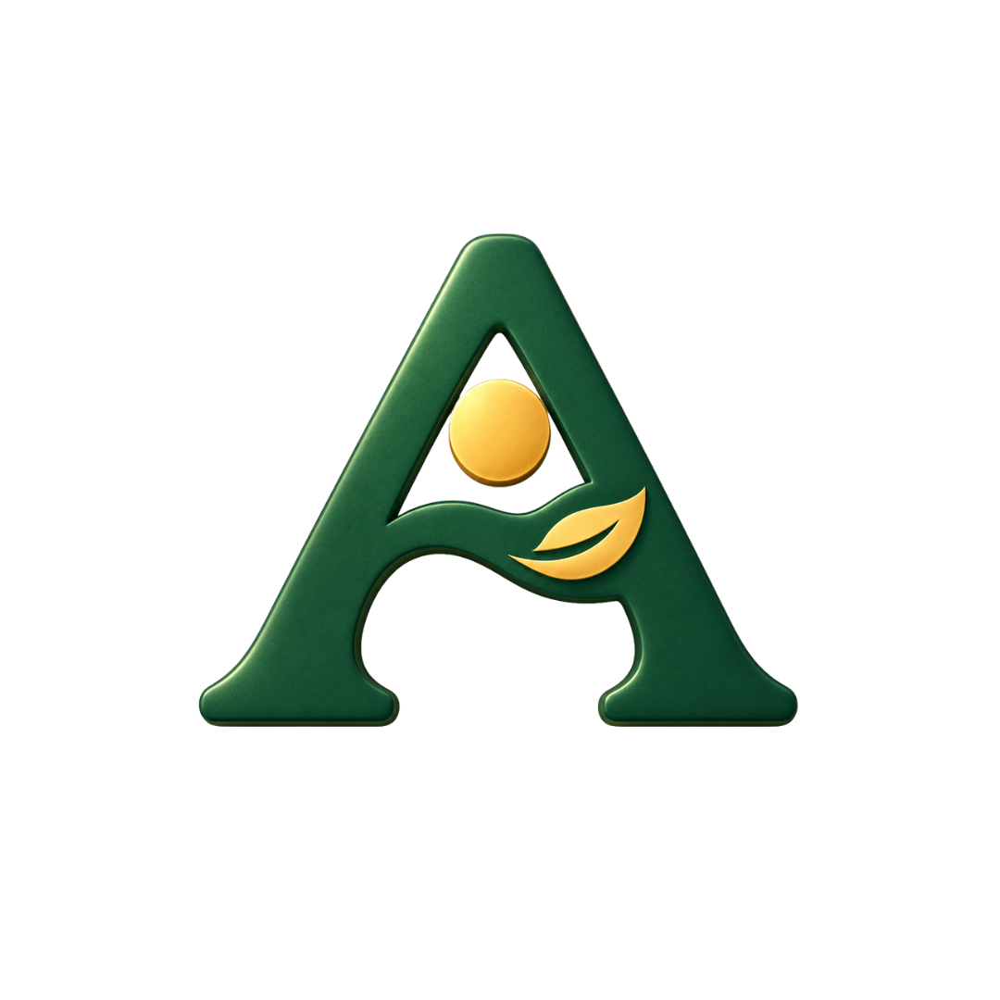
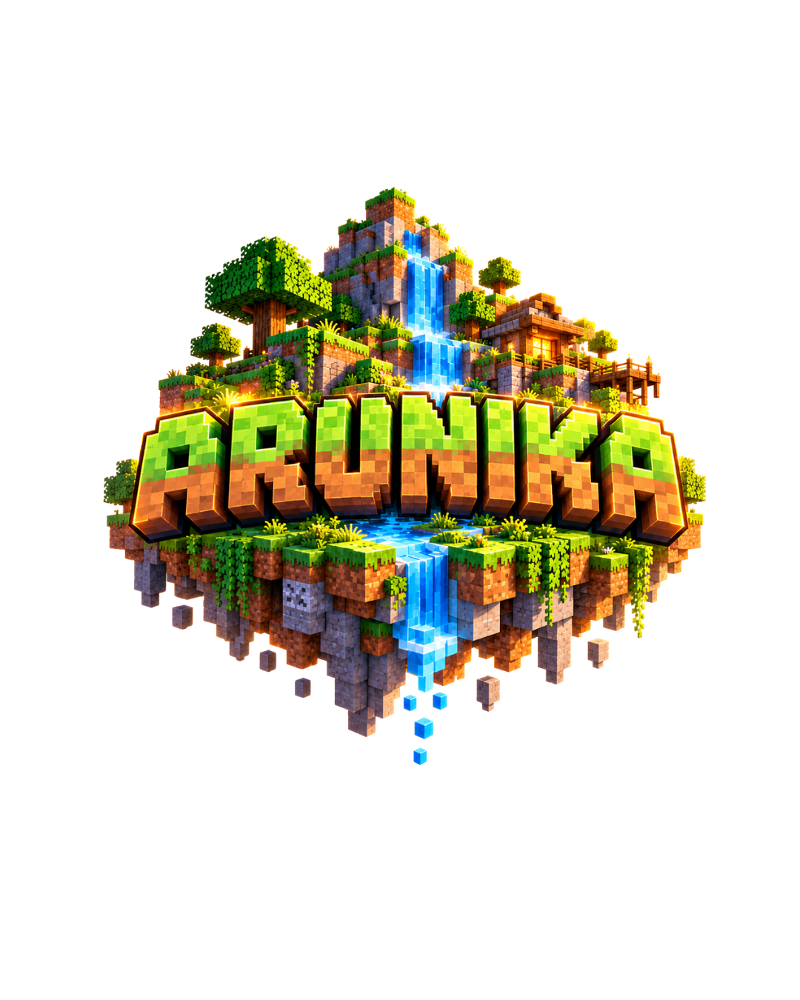
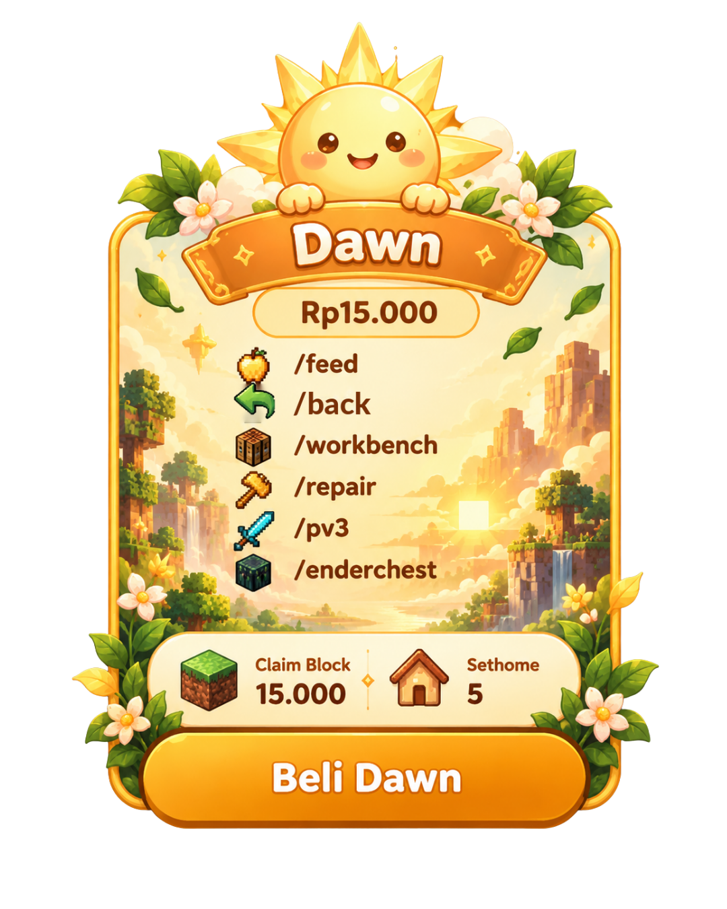
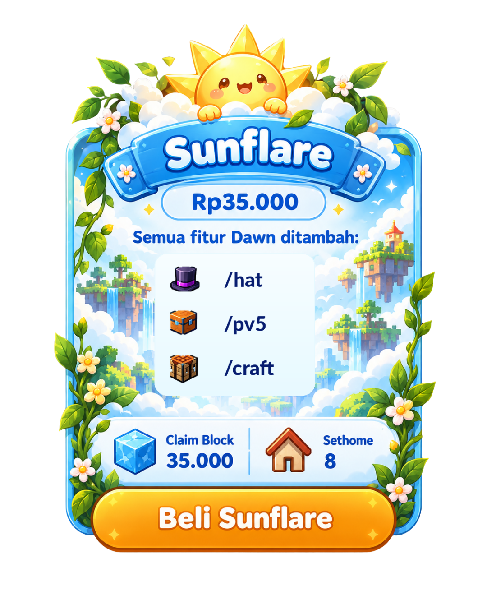
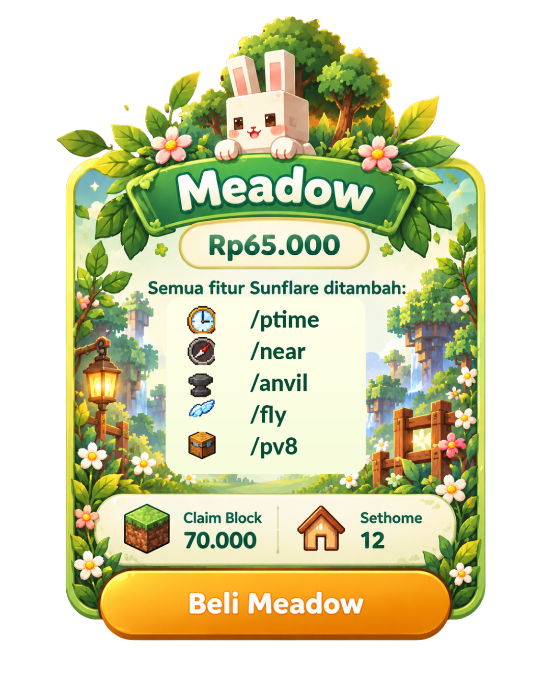
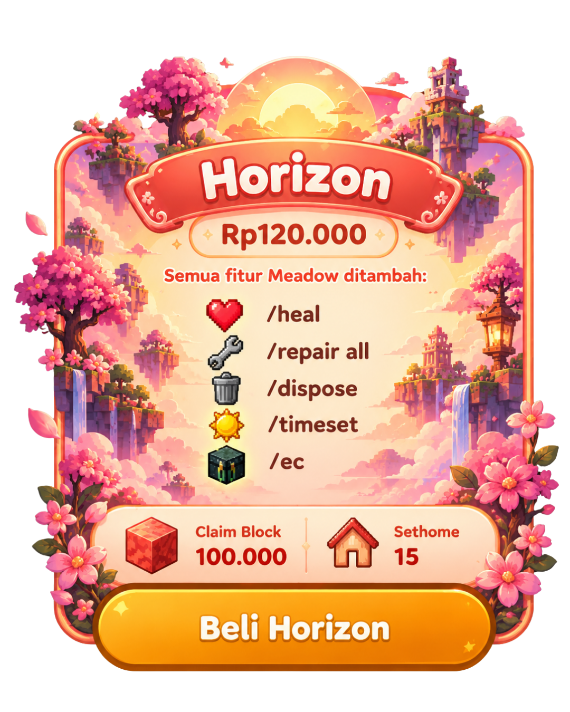
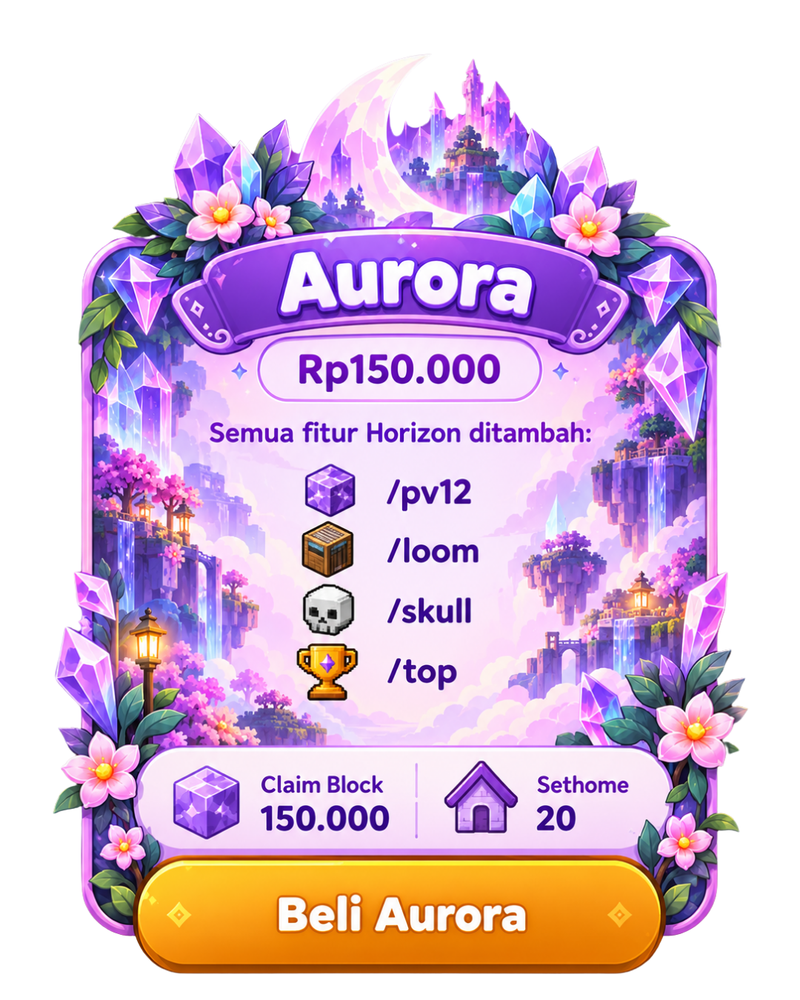
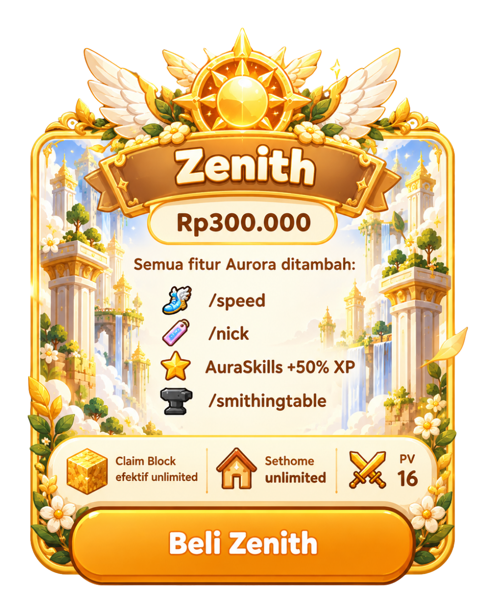

Cosmetic unik
Tampilkan gaya karaktermu dengan cosmetic custom khas ARUNIKA.

ARUNIKASelamat datang di ARUNIKA. Tempat petualangan, kreativitas, dan komunitas bertemu dalam satu dunia Minecraft.

Intip dunia ARUNIKA dan temukan lokasi favoritmu.
Lihat pencapaian dan perjalanan para pemain.
Temukan pilihan untuk mendukung komunitas.
Bangun sesuatu. Temukan teman. Buat cerita yang jadi milikmu.
ARUNIKA adalah rumah bagi petualangan Minecraft dengan arah tema ECO, chill lifestyle, RPG survival, dan multiplayer.
Tampilkan gaya karaktermu dengan cosmetic custom khas ARUNIKA.
Dekorasi rumah dan tempat favoritmu dengan furniture bermodel custom.
Temani petualanganmu dengan mount dan pet custom yang bisa ditunggangi.
Dari ekonomi pemain dan dekorasi rumah sampai quest dan pengembangan skill.
Buka toko sendiri dan berdagang dengan pemain lain.
Jual dan cari barang melalui pasar lelang antarpemain.
Tebang pohon sekaligus. Tahan Shift untuk menghancurkan satu batang saja.
Item drop dan mob ditumpuk otomatis agar lebih ringkas.
Pilihan rank berbayar untuk melengkapi pengalaman bermain.
Model custom untuk cosmetic, furniture, serta mount dan pet yang bisa ditunggangi.
Coba peruntunganmu melalui sistem gacha ARUNIKA.
Dukung ARUNIKA dengan memberikan vote untuk server.
Selesaikan quest dan temukan tantangan dalam petualanganmu.
Ikuti kisah ARUNIKA sebagai bagian dari perjalananmu di dunia ini.
Tersedia 5 SL di ARUNIKA.
Kembangkan skill karakter dan progres petualanganmu.
Variasi enchantment dari Advanced Enchantments untuk perlengkapanmu.
Alamat server, versi, aturan resmi, dan tautan komunitas akan ditambahkan saat tersedia.
Peringkat komunitas ARUNIKA, langsung dari data server saat integrasi tersedia.
| Peringkat | Pemain | Waktu bermain |
|---|---|---|
♜ Perjalanan belum tersinkron.Leaderboard belum terhubung ke data server. | ||
Belum ada data pemain yang dipublikasikan.
Pilih rank ARUNIKA dan lihat benefit pada setiap kartu. Pesan langsung melalui WhatsApp.
Klik gambar untuk membuka WhatsApp. Pesan akan berisi nama rank dan harga yang kamu pilih.






Pembelian dikonfirmasi langsung bersama admin melalui WhatsApp.
Lihat lanskap dunia, lokasi, dan pemain jika tersedia pada layanan peta server.
Hubungkan alamat map server untuk menampilkan peta dunia ARUNIKA di sini.
Posisi pemain mengikuti pengaturan privasi pada layanan map server.